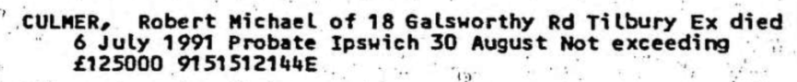

Robert Michael Culmer 1937 - 1991
[ Home ] | [ Calendar ] | [ Surnames Index ] | [ Family History ]The son of Robert Culmer (a retail outfitting clothing manager & buyer) and Dorothy GardinerRobert Culmer, the fourth cousin on the mother's side of Nigel Horne, was born in Hackney, London, England on Sep 6, 19371,2,3 and. He married Valerie Nelder (with whom he had 1 surviving child) in Thurrock, Essex, England around May 19614.
Throughout his life, he lived at 22 Beaconsfield Road, Chislehurst, Kent, England on Sep 29, 19391; and at 18 Galsworthy Road, Tilbury, Essex in 1991.
He died on Jul 6, 1991 in Hillingdon, London, England3.
Parents
- Robert Nigel Charles was born on Nov 2, 1910
- Dorothy Emma was born on Oct 29, 1909
Citations
- 1939 Register - Findmypast (was recorded at this address)
- England & Wales births 1837-2006 - Findmypast
- England & Wales deaths 1837-2007 - Findmypast
- England & Wales Marriages 1837-2005 - Findmypast
Media
Robert Culmer - probate

1939 Register - TNA/R39/1251/1251F/020/40
England & Wales births 1837-2006 - BMD/B/1937/3/AZ/000258/094
England & Wales deaths 1837-2007 - BMD/D/1991/7/78359864
England & Wales marriages 1837-2005 - BMD/M/1961/2/AZ/000261/075
Family Tree

Generated by ged2site. Last updated on Nov 13, 2024